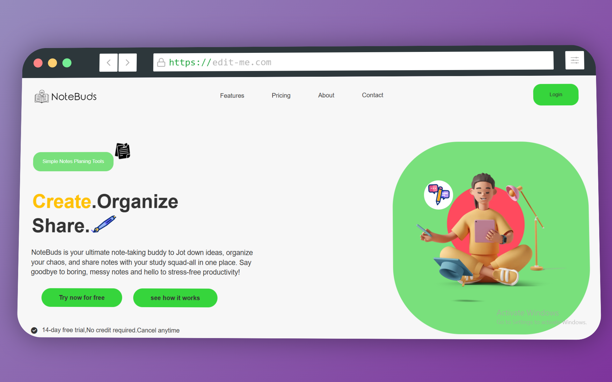
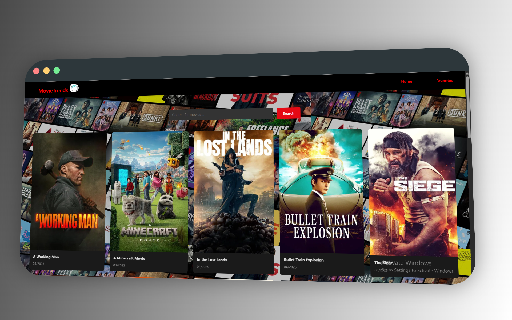
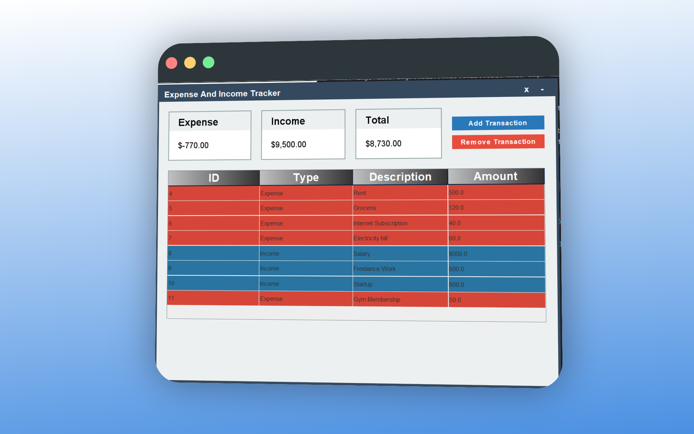
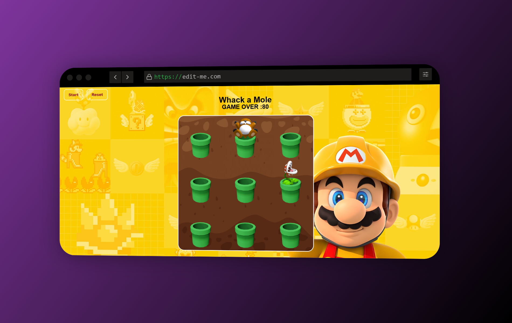
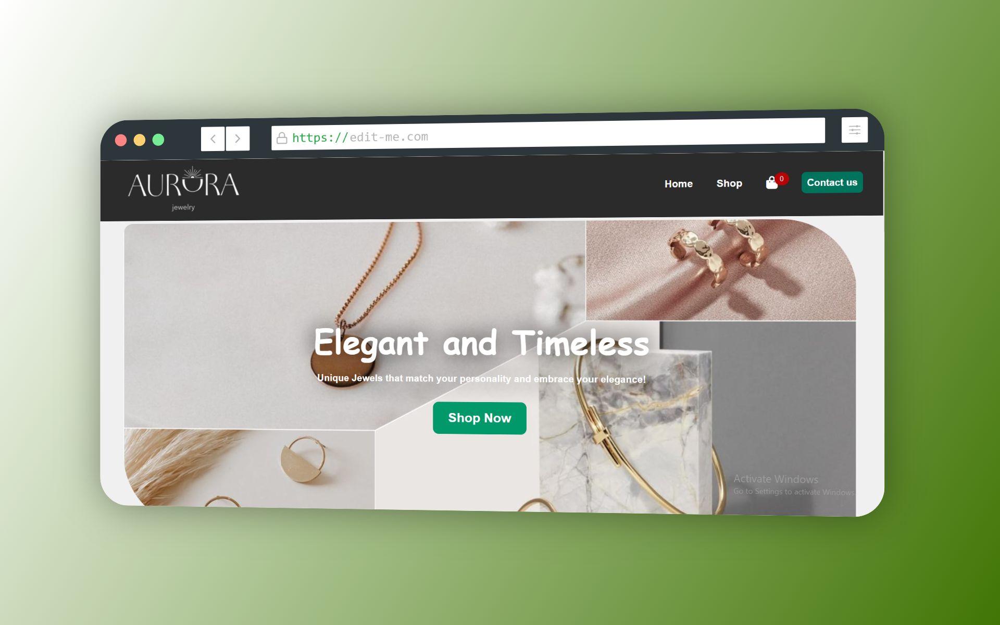

Recent Projects

Note-Taking
NoteBuds is a responsive web app designed fornote-taking and task management. Users can create, edit, and organize notes, making it easy to keep track of ideas and to-do lists. The app includes user authentication, allowing each user to access their own notes. With a clean and intuitive interface.
Tech Stack: JavaScript, HTML, CSS, PHP, MySQL
Live Demo

Trending Movies App
A web application that displays the top trending movies of the week and allows users to search for movies.Built with React.js, Vite, and Material UI, it pulls dynamic data from The Movie Database (TMDb) API.The app features client-side routing with React Router DOM and efficient asynchronous data fetching with Axios. Designed to be fully responsive across all devices.
React.js, Vite, JavaScript, React Router DOM, CSS / Material UI

Expense Tracker App
A Java Swing desktop application for managing personal finances. Users can log expenses and incomes with descriptions, track their total balance, and monitor savings. The app securely stores all data in a MySQL database and features an intuitive interface for easy navigation and financial management.
Tech Stack:Java Swing,Java Databae Connectivity,MySQL,Object-Oriented Programming
{kind=link}

Password Generator
A powerful and user-friendly tool designed to create strong and secure passwords instantly.It generates random passwords using a combination of uppercase letters,lowercase letters, numbers,and special characters to enhance security.This project features a clean and responsive user interface.It also includes a convenient copy-to-clipboard function,making it easy to use across different platforms.
Tech Stack:HTML,CSS,JavaScript

Whac-Amole Game
A simple yet engaging browser-based game where players must click on appearing moles to score points while avoiding the dangerous plants. The game features dynamic tile updates, randomized mole and plant positions, and a scoring system.It includes interactive elements, event-driven gameplay, and a reset functionality for a seamless user experience.
Tech Stack: JavaScript, HTML, CSS

Online Store
Aurora Jewelry is a modern e-commerce platform designed to provide a seamless and visually appealing online shopping experience for jewelry enthusiasts.The website features a user-friendly interface, secure user authentication,product browsing,and an intuitive checkout process. The platform ensures,efficiency, and a smooth customer journey.
Tech Stack: JavaScript, HTML, CSS
Contact Me
Submit